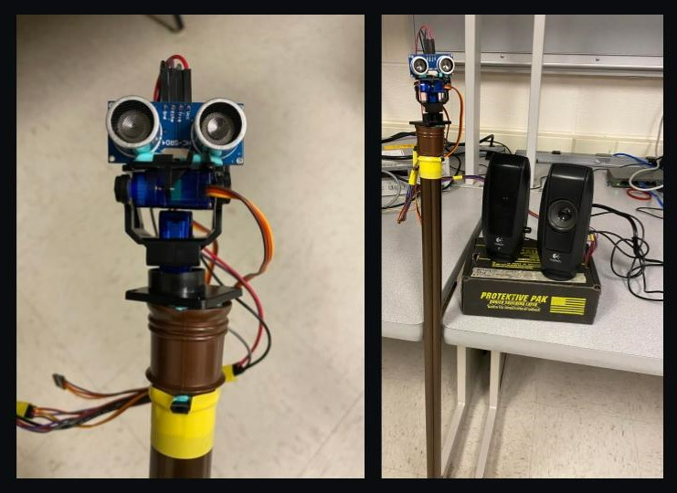
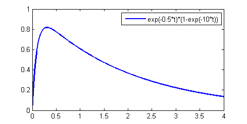
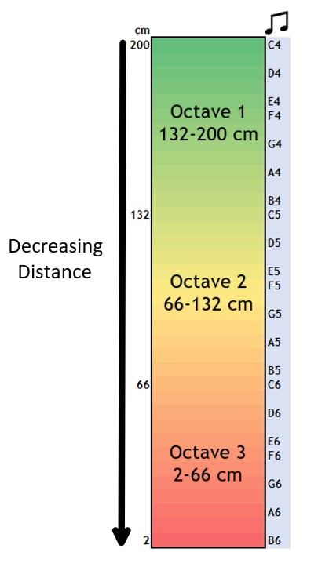

System
Description
Form Factor
We have designed the AroundSound as an attachment on top of a walking stick or a staff. For a personal navigation aid for the visually impaired, we wanted the device to be something that the user can keep physically close to them at all times. The proximity to the user was also important for the efficacy of the navigation so that the device could almost “see” from the perspective of the user itself.
During our initial brainstorming, we considered a few wearable forms for the device, including a hat attachment, a tie, or a belt, all placed at the user’s axis of symmetry in order to provide more appropriate mapping of the surroundings. We had also considered using an array of sensors for a complete mapping.
Finally, we decided to go with the current form factor of a walking stick head with a movable sensor. This is at a more appropriate height (waste-level) for detecting almost all obstacles that might come in the way of the user, and it also provides a free-ranging mount for the distance sensor. Moreover, a walking stick is a commonly used assistive product used by visually impaired people, so the mental cost of adoption will be insignificant. Now, whenever the user wants to get an idea about their environment, they can place the stick in front of them and press a button to start the scanning process, which tells them exactly how far things are in every direction, through sounds coming from that direction. The placement of the button on the stick helps them always keep the stick facing forward (or any direction they choose). The images below display the final prototype of AroundSound we created and demonstrated.

Sound Production
AroundSound works by manipulating the user’s inherent ability of sound localization, i.e., their ability to identify the location or origin of a detected sound in direction and distance, by producing three-dimensional audio. Each time the button is pressed, a six second sound sweep with seven distinct beeps is played indicating the distance of objects at different angles within the field of view.
Sound Generation
The beeps are played through the 12 bit dual channel MCP4822 DAC which allows us to communicate with the PIC32 microcontroller via an SPI interface. In the code, we configured DAC A to be used for the left ear and DAC B to be used for the right ear. The basic beeps are implemented using direct digital synthesis (DDS) that uses sine wave bursts to create a digital sound signal. The DAC then converts this digital waveform into an analog waveform so that it can be heard through speakers connected to it. The frequency and amplitude approximations for DDS are done using frequency modulation (FM) synthesis, which modulates the frequency of the sound to improve its quality. Because of the limited compute power offered by the PIC, it was necessary to optimize these approximations to be able to produce sound at a sampling rate that makes the beeps sound pleasant to the ear. This means that all the sound synthesis related computation that occurs inside the timer ISR running at 20KHz, needed to complete in a reasonable number of cycles. For this, we used the _Accum datatype for all decimal values and calculation (e.g. amplitude and frequency). The _Accum is a fixed point value whose operations are much faster than the default floating point data type. We also reduced the number of calculations performed by predetermining some fixed values such as 2^32/44000 used in DDS.
The basic waveform equation that we used for FM synthesis is
wave = envelopemain * sin(Fmain*t + envelopefm*(sin(Ffm*t)))
with the following exponential function for each envelope
envelope = Ao * e(-dk_rate*t) * (1 - e(-attack_rate*t))
where dk_rate and attack_rate are the fractional changes in amplitude per decay sample. These exponential functions are calculated as first-order differential equations each time there is a timer interrupt. Modulating the attack and decay rates for the main and frequency-modulated envelopes changes the quality of the sound. For significant amplitude, the attack time should be much shorter than the decay time, so that the amplitude reaches its full output level quickly and decays to lower levels slowly as shown in the figure below. This is especially true since we did not add any ‘sustain time’ that would hold the amplitude at its full output level for a set period of time before starting to decay.

Following the above logic, we set the parameters as follows to obtain a string-like sound:
- attack_main = 0.001
- attack_fm = 0.001
- dk_main = 0.90
- dk_fm = 0.80
- F_main = 1
- F_fm = 3
Three-Dimensional Audio
These basic beeps are made three-dimensional based on the duplex theory of sound localization by the human auditory system, which states that since human ears are on different sides of the head and thus have different coordinates in space, the distances between the sound source and ears are different. This results in time and intensity differences between the sound signals that reach the two ears. These differences are called Interaural Time Difference (ITD) and Interaural Intensity Difference (IID) respectively.

ITD is a direct result of the difference in the distances that the sound wave has to propagate through in order to reach either ear. Sounds produced on the right side reach the right ear earlier than the left ear. Based on the angular position of the acoustic source θ with respect to the center of the head, the head radius r which we calculated to be 8 cm on average, and the velocity of sound c, the difference in the distances is approximated to be 3*r*sinθ. We then used the following formula to calculate the ITD in units of cycles.
ITD = 3 * r * abs(sin θ) / c
IID is highly frequency dependent and is explained by the shadowing effect of the human head and ears. Sounds produced on the right side are louder to the right ear than the left since the right ear and the head act as barriers between the left ear and the sound source, absorbing some of the sound waves. IID increases with increasing frequency and is modelled as
IID = 1 + (f/1000)^0.8 * abs(sin θ)
With these equations, the ITD and IID are both zero when the angular position of the acoustic source is zero, i.e, the source is straight ahead and hence at an equal distance from both ears. They are also symmetric along positive and negative angles in the field of view. For example, ITD is the same for θ = 60 and θ = -60. These calculations are done within the sound thread and their results are stored in global variables for use within the timer ISR. In the ISR, the closer ear is determined by the sign of the angle θ. If θ is positive, the sound is coming from the left side and the left ear must hear the sound earlier and louder than the right ear. The reverse is true for a negative θ. For this, the main and frequency modulated phase and sound wave calculations for the farther ear are started ITD cycles after those for the closer ear. This difference in the number of cycles is maintained by a sound counter within the ISR. Before writing the sound wave to the appropriate DAC channel, the amplitude of the farther ear is scaled down by the IID attenuation. The angle θ is controlled within the program in the sound thread and mapped to the position of the servo motor in the servo thread.
Distance Perception
Three-dimensional audio implemented as explained above enables the user to determine the direction of origin of the sound. The second aspect of audio in AroundSound is to enable proximity perception of objects in these directions. This is done by splitting the entire range of distances (2 cm to 2 m) into smaller sub-ranges, and mapping each sub-range to a distinct frequency. For a pleasant sound experience, we mapped these sub-ranges to musical notes of different frequencies over three octaves. Starting at the note C4 for the longest distance (2 metres) and going up to the note B6 for the shortest distance (2 cm), there are 36 distinct notes, each mapped to a different sub-range. This results in sub-ranges of length 5.5 cm which is fine-grained enough for accuracy while at the same time slightly coarse-grained to not confuse any user. Each octave covers a range of 66 cm as shown in the figure below. Higher frequencies (red region in the figure) are meant to intuitively warn the user that there is an object very close to them, while lower frequencies (green region in the figure) indicate safety as the object in that direction is farther away.

With all of the above implementations, we obtained a six second sweep which can reliably inform a visually impaired user of the direction and distance of objects around them. We connected the DAC output of the PIC32 microcontroller to speakers which in turn were connected to headphones that were worn by the user. This was done because the speakers had an in-built gain circuit that amplified the sound making it more clear and easier to perceive. To make the device more mobile, we can implement a gain circuit using an LM386 sound amplifier that would eliminate the need for external speakers and allow us to connect headphones directly to the DAC output.
Distance Measurement
The second key subsystem in the project was the measurement of the distance of objects surrounding the user. In order to create a mapping of the user’s environment, the device had to measure the distance of obstacles at multiple points in the visual range. In order to achieve this, we have used the HC-SR04 Ultrasonic distance sensor in AroundSound. This is one of the most common distance sensors available in the market and is used by a variety of projects.
The HC-SR04 measures distance of any object in front of it by transmitting an ultrasonic sound pulse (above 20 KHz) and detecting the receipt of its echo from the object. This is a passive sensor, i.e. it doesn’t directly measure the distance and communicate that to the microcontroller through a protocol like some of the sophisticated Time-of-flight sensors. Instead, the microcontroller needs to manually send the sound pulse through the sensor, and measure the duration of the echo. The sensor is designed to measure distances from 2 cm to up to 4 m with an accuracy of 3 mm.
Circuit
The HC-SR04 sensor operates with 4 pins: 5V input, ground, trigger, and echo. In our system, we power the sensor through the VIN and GND pin on the SECABB. The TRIG pin is a general output pin, so we use pin RA2 on the development board. For the ECHO signal, since we need to measure the duration of a pulse, we use an input capture module on the PIC32 from pin RPB13 on SECABB.
Software Implementation
As described above, the distance sensor consists of one TRIG input and one ECHO output pin that are used to determine the distance of an object. In order to take one instance of the measurement, the following steps take place sequentially.
- The TRIG pin of the sensor is pulled up by the microcontroller for 10 us.
- The sensor then transmits 8 sound pulses at 40 KHz, which serves as the “ultrasonic signature”, helping it distinguish the sound from other sounds in the environment.
- Once the 8 pulses have been transmitted, the ECHO pin is set to high by the sensor. This output stays high until the sensor receives the reflections of all the 8 sound pulses, after which it is pulled back down.
- The microcontroller measures the duration for which the ECHO pin was set high, which is then used to measure the distance according to the following formula:
distance_cm = (0.034 * duration_us) / 2;, where 0.034 cm/us is the speed of sound in air.
This sequence has been illustrated in the animation below.

In order to perform this on the PIC32 microcontroller through the development board, we used the IO pin A2 to control the TRIG pin. In the code, we configure pin A2 as a digital output, and inside the distance thread, the pin is set to high when there is a need for distance measurement. Since it is essential for the TRIG pin to be high for exactly 10 us, we used a blocking delay in code using nop statements. With the microcontroller running at the default 40 MHz clock speed, we needed 400 nop statements to create a delay of 10 us.
For the precise measurement of the duration of the reflected pulse on the ECHO pin, we used the input capture module 1 on the PIC32, connected to pin RPB13 on the SECABB. The input capture was configured with timer 3 as a free-running counter to trigger an interrupt at both the rising and the falling edge of the ECHO pin. This allowed us to obtain the precise time duration from when the ECHO pin is set to high to when it is pulled back low by the sensor. Since this duration of the ECHO pin can be up to 40 ms, we needed the timer to be able to measure up to 40 ms in its 16-bit register, so we set the timer to run at 156.25 KHz (prescaler of 256), which gave us a resolution of 6.4 us. From the above distance formula, this gave us a distance resolution of 1 mm, which is lower than the sensor prescribed resolution of 3 mm, therefore avoiding any loss of accuracy.